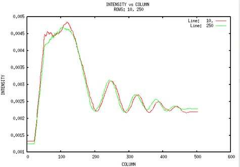

| .OPERATION: | PF G | ; Profile across an image file |
| .IMAGE: | sav_pp_po_pw | ; Image (input) |
| .GNUPLOT OUTPUT FILE: | pf_plot | ; Gnuplot plot file (output) |
| .INDIVIDUAL, GLOBAL, OR SUM SCALE PLOT? (I/G/S): | I | ; Individual scaling |
| .ROW NUMBER(S): | 10, 250 | ; Rows |
| .DISPLAY PLOT NOW? (Y/N): | Yes | ; No print |
| INPUT IMAGE |
|---|
 |
| sav_pp_po_pw000 |
| PROFILE PLOT |
|---|
|  |
| pfg_plot.gpl |